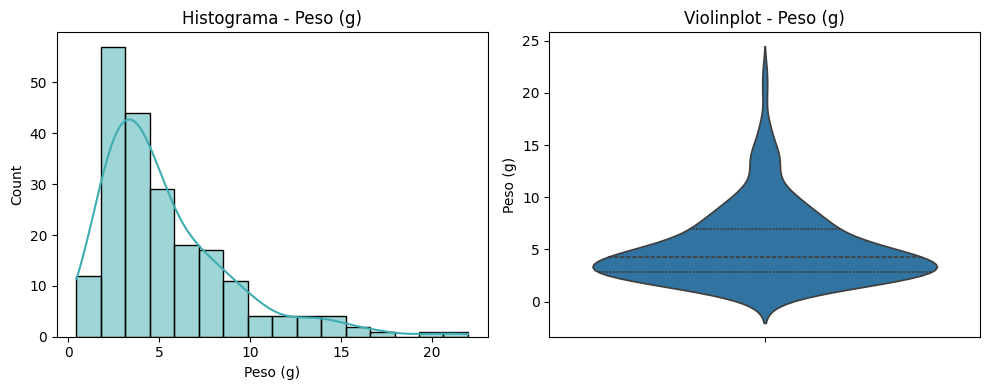
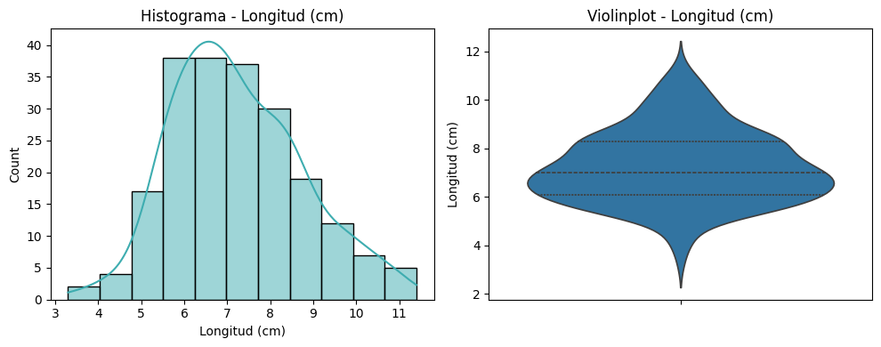
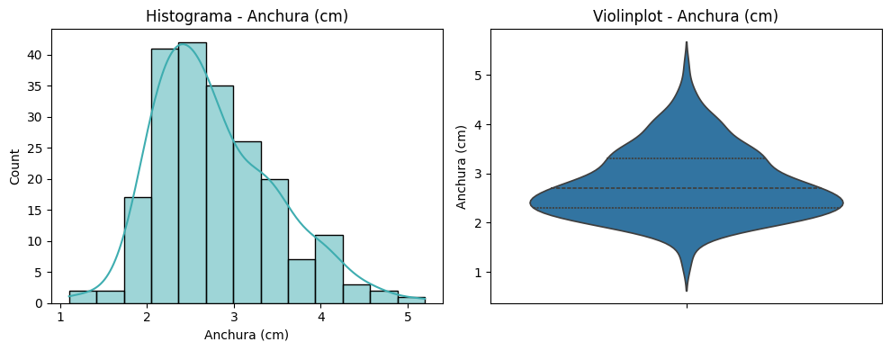
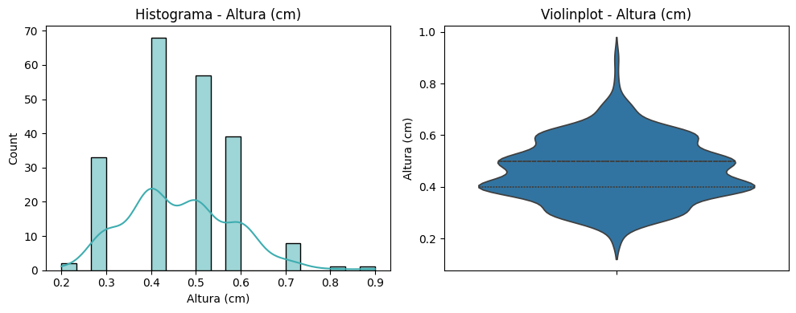
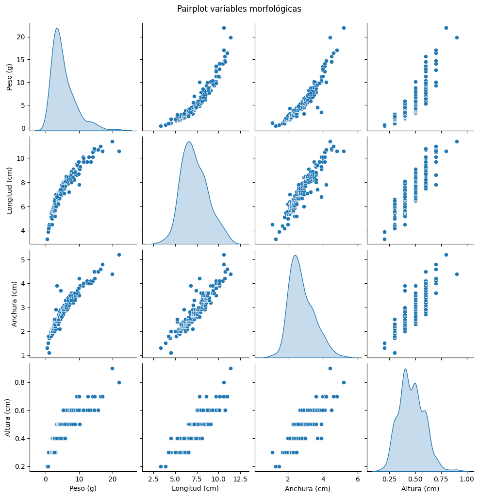
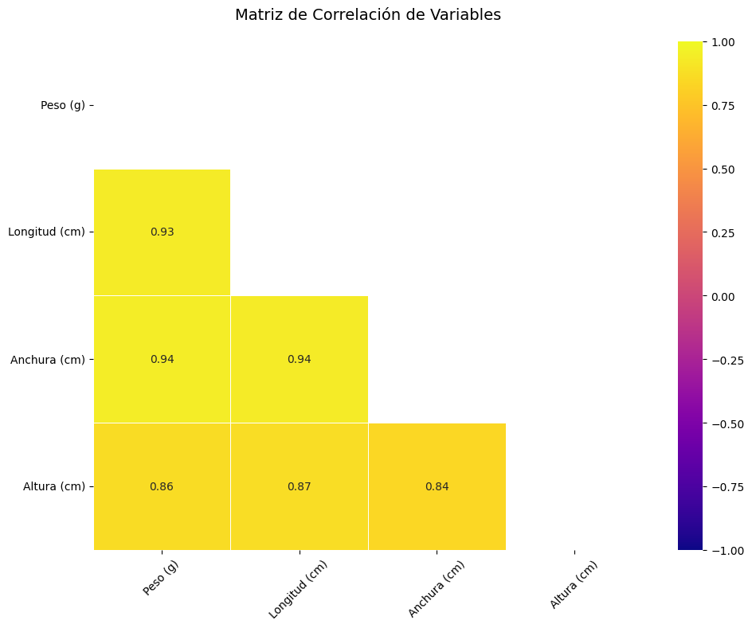

3. Obtención y etiquetado del dataset#
Resumen
Este artículo presenta la metodología utilizada en la recopilación de un conjunto de datos o dataset representativo que relacione las dimensiones corporales de los lenguados con su peso real en condiciones controladas. Para ello se ha contado con la colaboración del equipo de producción de Safistela S.A (Sea8) para garantizar los controles de calidad estadísticas y el cumplimiento de los estándares éticos en investigación acuícola.
Entregable: E2.1
Versión: 1.0
Autor: Javier Álvarez Osuna
Email: javier.osuna@fishfarmfeeder.com
ORCID: 0000-0001-7063-1279
Licencia: CC-BY-4.0
Código proyecto: IG408M.2025.000.000072
3.1. Introducción#
El desarrollo de modelos precisos para la estimación de peso en peces planos, como el lenguado (Solea spp.), requiere de conjuntos de datos morfométricos robustos que capturen la relación entre las dimensiones corporales y el peso real en condiciones controladas. Estas relaciones son fundamentales para aplicaciones en acuicultura, donde la monitorización no invasiva del crecimiento optimiza el manejo productivo y reduce el estrés en los organismos [Takács et al., 2015]. En particular, los juveniles entre 70 - 90 días representan una fase crítica del desarrollo, en la que variaciones en la longitud, altura y anchura pueden correlacionarse significativamente con cambios en la biomasa, siempre que las mediciones se realicen con precisión y minimizando perturbaciones [Costas et al., 2013].
No obstante, la adquisición de estos datos enfrenta un desafío metodológico clave: equilibrar la exactitud de las mediciones con el bienestar animal. Estudios previos han demostrado que la manipulación repetida de ejemplares juveniles induce estrés agudo, afectando no solo su fisiología, sino también la fiabilidad de los datos morfométricos al alterar su postura natural [Martins et al., 2012]. Por ello, el protocolo para la obtención de los valores morfométricos necesarios se diseñó bajo el principio de “medida única estandarizada”, respaldado por controles de calidad estadísticos y técnicas de sedación suave, para garantizar tanto la representatividad de los datos como el cumplimiento de los estándares éticos en investigación acuícola [Conte, 2004]. La metodología descrita a continuación proporciona un marco reproducible para obtener datos reales confiables, esenciales para el desarrollo de algoritmos de estimación de peso en lenguados.
3.2. Métodología para la adquisición de datos morfométricos#
3.2.1. Preparación de los Ejemplares#
Los juveniles de lenguado (90 días post-eclosión) fueron previamente aclimatados durante 24 h en tanques de cuarentena con condiciones controladas (temperatura: 18 ± 1°C, salinidad: 35 ± 1 ppt, oxígeno disuelto: >6 mg/L) para minimizar el estrés asociado al manejo [Martins et al., 2012]. Antes de las mediciones, se realizó un ayuno de 12 h para evitar variaciones en el peso corporal debido a la ingesta de alimento.
3.2.2. Protocolo de Medición#
Las mediciones morfométricas (peso, longitud total, altura y anchura) se realizaron siguiendo un enfoque de medida única por variable, fundamentado en criterios de bienestar animal y reproducibilidad estadística. Cada individuo fue manipulado por un único operador entrenado, utilizando instrumental calibrado (balanza digital de precisión ±0.01 g y calibrador digital ±0.01 cm). Para garantizar la estandarización, la longitud total se midió desde el rostro hasta el extremo del lóbulo caudal en posición natural, mientras que la altura y anchura se registraron en la región de máxima dimensión corporal [Tonna 2015].
La decisión de no replicar las mediciones se basó en evidencias que demuestran que la manipulación repetida induce estrés agudo en estadios juveniles, afectando su homeostasis osmótica y aumentando la mortalidad post-manejo (Costas et al., 2013). Las réplicas requieren mayor tiempo fuera del agua, generando hipoxia y acidosis tisular. Estudios en Solea senegalensis muestran que exposiciones > 30 segundos alteran el equilibrio osmótico [Costas et al., 2013]. Además, cada contacto adicional incrementa el riesgo de lesiones (ej. descamación, daño en aletas) y eleva los niveles de cortisol, afectando su fisiología y crecimiento posterior [Conte, 2004].
Para mitigar riesgos, se empleó sedación suave, protocolo validado previamente por el personal facultativo de Safistela S.A (Sea8). Cada ejemplar fue medido en un tiempo máximo de 20 segundos fuera del agua, sobre una superficie húmeda para reducir la pérdida de mucus.
3.2.3. Consideraciones Éticas y de Bienestar#
El protocolo cumplió con las directrices de la UE (2010/63/EU) para la reducción del estrés en animales de experimentación. Se evitó la manipulación repetida y se monitorizaron signos de estrés post-manejo (ej. natación errática o falta de alimentación durante 2 h posteriores). Los ejemplares fueron reintegrados inmediatamente a tanques de recuperación con flujo de agua continuo y sombreado para minimizar perturbaciones.
3.2.4. Estructura de los datos#
La base de datos se organizó en una hoja de Excel con 209 registros y 5 variables (columnas)
Variable |
Tipo de Dato |
Unidad |
Descripción |
|---|---|---|---|
ID_Ejemplar |
Numérico |
- |
Número entero correlativo. |
Peso |
Numérico |
gramos (g) |
Peso corporal. |
Longitud |
Numérico |
cm |
Longitud total. |
Altura |
Numérico |
cm |
Altura máxima del cuerpo. |
Anchura |
Numérico |
cm |
Anchura máxima del cuerpo. |
3.3. Inspección general del conjunto de datos#
import pandas as pd
import numpy as np
import matplotlib.pyplot as plt
import seaborn as sns
# Leer el dataset
file_path = '.././data/Dimensiones_lenguado.xlsx'
df = pd.read_excel(file_path)
print("Forma:", df.shape)
print("\n Visualización de los 15 primeros registros")
display(df.head(15))
print("\n Estadística básica")
display(df.describe().transpose())
Forma: (209, 4)
Visualización de los 15 primeros registros
| Peso (g) | Longitud (cm) | Anchura (cm) | Altura (cm) | |
|---|---|---|---|---|
| 0 | 0.46 | 3.3 | 1.3 | 0.2 |
| 1 | 1.08 | 4.5 | 1.1 | 0.3 |
| 2 | 0.67 | 3.9 | 1.5 | 0.2 |
| 3 | 0.98 | 4.4 | 1.7 | 0.3 |
| 4 | 0.93 | 4.2 | 1.8 | 0.3 |
| 5 | 1.89 | 4.5 | 2.0 | 0.4 |
| 6 | 1.60 | 5.1 | 1.8 | 0.3 |
| 7 | 1.90 | 5.0 | 2.0 | 0.3 |
| 8 | 1.59 | 5.4 | 1.9 | 0.3 |
| 9 | 1.67 | 5.4 | 1.9 | 0.3 |
| 10 | 1.91 | 5.4 | 1.9 | 0.3 |
| 11 | 1.94 | 5.4 | 1.9 | 0.3 |
| 12 | 2.08 | 5.5 | 1.9 | 0.3 |
| 13 | 1.72 | 5.4 | 2.0 | 0.3 |
| 14 | 1.77 | 5.4 | 2.0 | 0.3 |
Estadística básica
| count | mean | std | min | 25% | 50% | 75% | max | |
|---|---|---|---|---|---|---|---|---|
| Peso (g) | 209.0 | 5.344641 | 3.635514 | 0.46 | 2.82 | 4.29 | 6.96 | 21.98 |
| Longitud (cm) | 209.0 | 7.244498 | 1.505369 | 3.30 | 6.10 | 7.00 | 8.30 | 11.40 |
| Anchura (cm) | 209.0 | 2.788995 | 0.698297 | 1.10 | 2.30 | 2.70 | 3.30 | 5.20 |
| Altura (cm) | 209.0 | 0.462679 | 0.117033 | 0.20 | 0.40 | 0.50 | 0.50 | 0.90 |
3.3.1. Distribuciones univariantes#
# DISTRIBUCIONES UNIVARIANTES
# ---------------------------
numeric_cols = ['Peso (g)', 'Longitud (cm)', 'Anchura (cm)', 'Altura (cm)']
for col in numeric_cols:
fig, ax = plt.subplots(1, 2, figsize=(10, 4))
sns.histplot(df[col], kde=True, ax=ax[0], color="#3EADB0")
ax[0].set_title(f"Histograma - {col}")
sns.violinplot(y=df[col], ax=ax[1], inner="quartile")
ax[1].set_title(f"Violinplot - {col}")
plt.tight_layout()




Variable |
Forma del violín |
Interpretación |
|---|---|---|
Peso (g) |
Ancho entre 3 – 7 g, cola larga y estrecha hasta ≈ 22 g, varios puntos fuera del bigote superior. |
Distribución fuertemente asimétrica a la derecha: la mayoría son ejemplares pequeños‑medios y unos pocos muy pesados (outliers). |
Longitud (cm) |
Violín casi simétrico, más ancho en 6 – 8 cm, cola superior corta, sin puntos fuera del bigote. |
Distribución unimodal y estable; no hay valores extremos claros, buena candidata a predictor base. |
Anchura (cm) |
Pico ancho en 2,5 – 3,5 cm, cola superior hasta 5,2 cm con muy poca densidad, 1‑2 puntos aislados. |
Forma similar a Longitud pero con cola alta leve; unos pocos peces muy anchos podrían ser anomalías o errores. |
Altura (cm) |
Violín estrecho (0,4 – 0,5 cm habituales), cola fina hasta 0,9 cm, varios puntos aislados arriba. |
Variable con rango pequeño; valores altos destacan como outliers y podrían indicar errores de medición o casos excepcionales. |
3.3.2. Distribuciones bivariantes#
sns.pairplot(df[numeric_cols], diag_kind="kde")
plt.suptitle("Pairplot variables morfológicas", y=1.02);

El análisis de las relaciones bivariantes muestra que el peso crece exponencialmente con la Longitud y la Anchura, dibujando nubes curvilíneas donde los puntos se vuelven más dispersos a medida que el pez gana tamaño; eso confirma que la relación no es estrictamente lineal. Longitud y Anchura mantienen entre sí una correlación positiva moderada los peces más largos tienden a ser más anchos mientras que Altura se agrupa fuertemente en torno a un intervalo estrecho y, salvo algunos valores altos anómalos, aporta poca variabilidad adicional. En todas las combinaciones que incluyen Peso se aprecian varios puntos solitarios por encima de la nube principal, lo que corrobora la presencia de outliers. No se observan clusters separados que sugieran sub-poblaciones distintas, sino una gradación continua, de modo que los valores extremos se interpretan mejor como individuos excepcionales (o posibles errores) que como grupos diferenciados.
3.3.3. Matriz de correlación#
# 2. Calcular matriz de correlación (método de Pearson por defecto)
corr_matrix = df.corr()
# 3. Crear el gráfico
plt.figure(figsize=(10, 8))
sns.heatmap(corr_matrix,
annot=True, # Muestra valores en cada celda
fmt=".2f", # Formato de 2 decimales
cmap='plasma', # Mapa de colores (rojo-negro-azul)
vmin=-1, vmax=1, # Rango de correlación [-1, 1]
linewidths=0.5, # Grosor de líneas entre celdas
mask=np.triu(np.ones_like(corr_matrix, dtype=bool)) # Mostrar solo triangular inferior
)
# 4. Personalizar
plt.title('Matriz de Correlación de Variables', pad=20, fontsize=14)
plt.xticks(rotation=45)
plt.yticks(rotation=0)
plt.tight_layout()
plt.show()

La matriz de correlación indica que, en el lenguado, el peso está fuertemente asociado con la longitud y la anchura (r≈0,94), mientras que su asociación con la altura (espesor corporal) es claramente menor (r≈0,86). En términos de varianza explicada, longitud y anchura individualmente capturan ~88% del comportamiento del peso (r²≈0,8836), frente a ~74% para la altura (r²≈0,7396). Esto es coherente con la biomecánica del pez plano: el peso depende del volumen, pero en especies deprimidas dorsoventralmente la variabilidad del área proyectada (aprox. longitud×anchura) domina sobre la variación del espesor. La correlación igualmente alta entre longitud y anchura (r≈0,94) sugiere una morfología con proporciones relativamente estables durante el crecimiento (isometría planiforme) o, al menos, una fuerte covariación de ambas dimensiones; en la práctica, esto implica multicolinealidad si se usan juntas en regresión. La correlación más baja de peso con la altura indica que el espesor es más variable entre individuos (condición corporal, estado nutricional, maduración gonadal), aportando información menos estable sobre el peso que las dimensiones planas. En conjunto, estas correlaciones significan que la masa del lenguado está principalmente determinada por su extensión superficial y que la altura añade variabilidad más idiosincrática.
Varianza explicada
Sea \(Y=\text{Peso}\) y \(X\in\{\text{Longitud},\text{Anchura},\text{Altura}\}\).
En regresión lineal simple se cumple: $\( R^2 = r^2, \)\( donde \)r=\mathrm{corr}(X,Y)$.
Con los valores obtenidos en la matriz de correlación tenemos que: $\( r_{Y,\text{Longitud}}=0.94,\qquad r_{Y,\text{Anchura}}=0.94,\qquad r_{Y,\text{Altura}}=0.86. \)$
Por tanto,
\(R^2_{\text{Peso}\sim\text{Longitud}} = 0.94^2 = 0.8836 \approx 88.36\%\)
\(R^2_{\text{Peso}\sim\text{Ancgurad}} = 0.94^2 = 0.8836 \approx 88.36\%\)
\(R^2_{\text{Peso}\sim\text{Altura}} = 0.86^2 = 0.7396 \approx 74\%\)